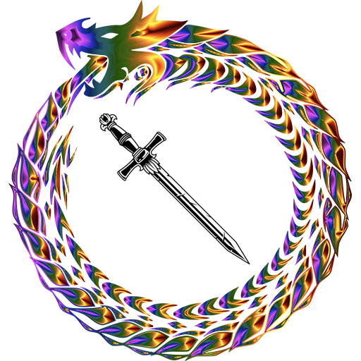
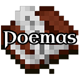
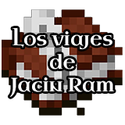
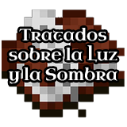
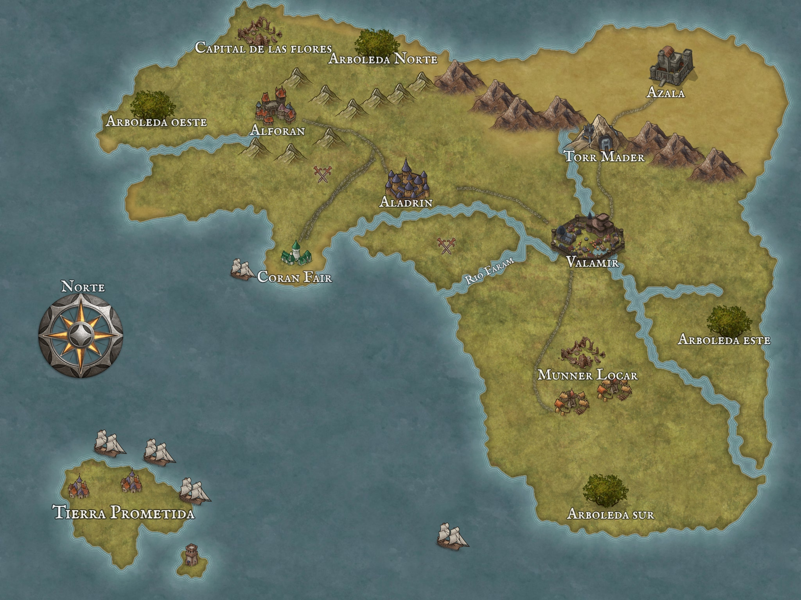

Una brisa sopló sobre la costa de Coran Fair arrastrando el olor a salitre. No se conoce el momento exacto cuando el mundo empezó a cambiar, pero esa brisa fue un comienzo. Cargada con un resquicio de magia la brisa flotaba por entre las calles del muelle, cruzó la plaza y se arremolinó alrededor de la reina Tyringail.
Tyringail sintió un suave toque en la espalda y un aire caliente que se elevaba al cielo, levantó la mirada y vio un cielo completamente despejado, aun así sintió que se aproximaba una tormenta. No resultaba extraño sentirse de ese modo, desde hacía unos cuantos meses el clima había empeorado y los granos habían empezado a encarecerse a causa de la escasez. Mantener un reino no era tarea fácil, menos aún cuando se trataba de un pequeño pueblo marginal que se encontraba casi en las garras de una nación mayor como lo era Aladrin.
Con un suspiro intentó quitarse la pesadez del cuerpo y se dirigió hacia el Palacio de Máfil, por norma general no llevaba a su guardia de honor cuando salía a la plaza, Coran Fair no era una ciudad peligrosa en el sentido de tener bandidos o ladronzuelos, pero en su camino al palacio, mientras giraba por una callejuela para evitar las multitudes pudo atisbar por el rabillo de ojo como un sujeto la perseguía. Haciendo gala de un semblante imperturbable siguió caminando, fingiendo no haberse dado por enterada, mayor fue su temor cuando otro hombre salió al paso y la encerró. El segundo hombre tenia un garrote en la mano.
Ber’Hom era apenas un joven, es cierto que tenía ya 94 años, pero eso era apenas una minucia para los Margor, sin embargo, él quería ver el mundo, viajar y vivir aventuras, lastima que al ser un jovencito entre los suyos no tuviera permitido salir de la arboleda.
Una noche un brisa cálida abrió la ventana de su cuarto, al levantarse para cerrarla vio como más allá de las copas de los árboles en el cielo nocturno cientos, no, miles de luces de colores estallaba y teñían la noche, el espectáculo duró apenas unos segundos en los que Ber’Hom vio figuras, formas y sintió que empezaba a comprender la naturaleza del mundo.
La voz retumbó en la cabeza de Balhaon, no, no era una voz, sería más preciso describirla como el chirrido que producen dos rocas al golpearse.
– La prisión se ha resquebrajado, el primero de mis elegidos ha sido liberado, mis manos vuelven a recorrer las tierras.
Un temblor recorría el cuerpo de Balhaon, un mezcla de terror y entusiasmo, La Sombra estaba le estaba hablando de nuevo, habían pasado milenios desde la última vez, antes de que todos los elegidos y la sombra fueran apresados por la coalición de las grandes compañías.
– Tu cumplirás mi voluntad en la tierra, ve, planta el germen de la sombra en el mundo – continuó la voz.
– Así será mi señor.
Permaneció con la rodilla hincada en el piso durante un rato más, estaba pletórico de felicidad, había sido el primero de los elegidos en despertar, tendría ventaja para ser el elegido entre los elegidos, aquel que gobernara una vez La Sombra ganase la Batalla del Fin de los días.
Finalmente se puso de pie, abrió un tajo en el aire, un corte en la realidad, un marco reluciente se alzó frente a él, el aire oscilaba a su alrededor profiriendo un tono etéreo, al otro lado del marco se podía observar una gran urbe, no tan grande como las que habían existido en su tiempo, pero sería un buen lugar de partida.
La doncella del mar era un albergue pequeño, aun así lo había escogido por ser el único que tenía una cama para Margor en toda la ciudad, no era un requerimiento necesario, pero al enterarse de que esa cama existía no pudo más que emocionarse, era sorprendente que un objeto de la época previa a que los Margor se recluyeran en las Arboledas siguiera existiendo, habían pasado mil años desde la última devastación y esa cama seguía igual de firme, eso le hizo preguntarse, ¿seria que otros objetos de eras pasadas seguían existiendo en el mundo?, ¿Alguien podría usar un objeto y al reencarnar en la siguiente era volver a encontrarse con él?.
Las preguntas que le surgían a causa de explorar el mundo eran deliciosas, pero eso no era lo que le habia traido hasta Coran Fair. La pequeña ciudad costera era una que pese a su reducido tamaño albergaba una gran biblioteca en palacio nutrida por los relatos de los primeros migrantes y los textos de los antiguos sabios Margor, gentes que entendía la urdimbre de la realidad, memorias preservadas de una época de la que solo quedaban resquicios.
Ber’hom ya se había acercado al palacio una vez a solicitar entrar en la biblioteca, pero los guardias lo rechazaron y le dijeron que necesitaba un permiso, permiso del cual obviamente carecía, y para el cual requeriria una audiencia con la reina la cual tardaría mucho en ocurrir. Esa mañana se dirigía hacia el palacio a realizar un nuevo intento cuando vio a lo lejos a la reina. se encaminó en su dirección, quizá podría darle acceso al presentarle sus motivos y se saltaría el molesto protocolo. De repente cuatro figuras con el rostro velado se abalanzaron sobre la reina. Eran Phar’Mir, corrían rumores peligrosos sobre ellos, Ber’hom pensó en lanzarse en su ayuda pero no podría hacer mucho sin recurrir a la violencia. De repente aparecieron tres individuos, parecian personas comunes, y un cuarto que venia de la dirección del palacio, destellos, chispas de colores se arremolinaban a su alrededor.
Las ahora cuatro personas, al ver que la reina estaba en peligro, se lanzaron en su ayuda, otro destello, chispas de colores saltaron de los primeros tres individuos, las chispas saltaban de uno a otro, se conectaban, los guiaban.
Faral Mor estaba molesto, acababa de tener una audiencia con el secretario de la reina y no le había dado ninguna solución frente al problema de los retenes de mercancía en los muelles de Aladrin, como se suponía que un mercader pudiera vivir si toda su mercancía era secuestrada por otro país y la reina no hacía nada para menguar el problema.
Bajó el largo puente de la entrada del palacio hasta las calles de Coran Fair, se encontraba ensimismado en sus pensamientos cuando escuchó un grito: «¿Quién os envía? Alejaos», en ese momento agarró la espada que le colgaba del cinto y corrió en dirección del sonido.
Al cruzar la esquina de una de las casas se encontró con una gran concentración de personas, cuatro hombres altos con el rostro velado rodeaban a otros dos jóvenes que parecían estar protegiendo a una mujer, no, no era cualquier mujer, era la reina Tyringail.
Espada en mano se abalanzó sobre el primero de ellos por la espalda, no acertó, el hombre giró sobre sí mismo y le dio una patada que envió a Faral hacia atrás. Los otros tres encapuchados atacaron en dirección a la reina los tres extraños los interceptaron con sus propias armas, pero los encapuchados eran más hábiles, poco a poco iban ganando terreno.
Tyringail se recuperó de la conmoción, sacó un cuchillo de la manga del vestido y lo lanzó directo a la cabeza de un de los atacantes, el hombre lo esquivó por poco, pero el cuchillo alcanzó a cortarle una de las mejillas y con ello el velo que le cubría el rostro cayó, entonces una melena roja quedó a la vista, ¿Phar’Mir? ¿Qué hacían en la ciudad?¿Por qué la atacaban? Habían llegado rumores de campamentos al norte en el camino hacia Alforan, pero no eran gentes que no se solían involucrar con las personas de ciudad. Antes de darse cuenta uno de los hombres había sobrepasado el forcejeo y dirigía un corte en su dirección, logró rodar sobre sí misma hacia el costado y esquivar el corte, si bien su vestido se había visto rasgado. Uno de los hombres que había acudido en su ayuda embistió al atacante. Tyringail vio como más allá de los tres hombres que luchaban contra los atacantes más próximos se encontraba uno de los mercaderes de la ciudad, estaba en una lucha bastante igualada con el encapuchado, Tyringail le lanzó el otro cuchillo que llevaba en la manga, el tiro iba a la cabeza pero falló, y le terminó acertando en un brazo, aún así fue suficiente para que vacilara y el mercader lo atravesara con su espada, el mercader salió corriendo en dirección a ella, pero a su lado cayeron los tres hombres, no se había percatado que estaban perdiendo sus duelos, los atacantes se acercaron con los garrotes en alto, al fondo corría el mercader gritando a la par que alzaba su espada. Tyringail volvió a sentir la brisa cálida revolotear.
Ber’hom vio como unas pequeñas chispas saltaban entre los hombres, al principio muy pocas y diminutas, cuando los derribaron, las chispas de colores empezaron a salir a borbotones, una marea de colores los rodeaba y saltaba entre ellos, de repente todas las chispas salieron disparadas a los agresores, primero se formó un corte en el aire, brillante y limpio, rápidamente el corte se extendió y formó una grieta, del otro lado de la grita se veía un bosque, una gran brisa succiono a los encapuchados hacia la grita y después de devorarlos se cerró. Ber’hom acababa de presenciar una brecha en el entramado de la realidad.

Poemas

Los Viajes de Jacin Ram
Tratados Académicos sobre el Entramado
Tratados Académicos sobre la Canalización

Tratados Académicos sobre la Luz y la Sombra
llueve hielo y ceniza,
es la tierra supurante,
su grito es estridente,
nace nuestra la promesa
y nuestra es la vergüenza.
Levo anclas en mi barco
olas chocan en el casco
rema, llora, cree, baila
el viento es la brújula
para el mundo que busco.
¡Mi rosa! No me dejes en el lecho
que es tu roce lo que me da vida,
pues sin ti mi vida es un helecho
y en mi ser queda honda helada.
Sin tu amor estoy insatisfecho,
por ti ahora alzo mi espada,
sin ti el mundo clama por las llamas,
su combustible serán mis lágrimas.
Llora rey loco
desafía al mundo
muere por amor
Reniega de las promesas
injusto es el destino
no lo vale ser humano
ya no quedan esperanzas
???
???
???
Jacin cruzaba el valle de zaphir al norte de Munner Locar, montado en su caballo iba a máxima velocidad en dirección a Valamir, en su montura llevaba un arcón con un gran artefacto y a su espalda venían decenas de engendros de la sombra, en los últimos años se veían más y más, pero estos estaban muy cerca de las poblaciones humanas, y ahora lo persiguen por haberles robado el arcón.
Se había cruzado con el campamento de los depravados de la sombra por puro azar, pero sintió el gran poder del artefacto al interior del arcón y no pudo más que averiguar que era, cuando se percató que no había solo humanos fue cuando tomó la decisión de robarlo, al lado de los humanos habían criaturas monstruosas, engendros de la sombra, lo que catalogaba a los humanos como sin alma.
Al robar el arcón el caos estalló y las criaturas tomaron sus monturas para perseguirlo, llevaban ya varios kilómetros recorridos, pronto su propia montura llegaría al límite y caería rendida, tenía que urdir alguna treta que lo sacara de esta situación.
Más adelante había un pequeño riachuelo, ahí es donde ejecutaría su plan, antes de llegar, abrió discretamente el arcón y extrajo la pequeña estatua con forma de hombre del interior y al llegar a la orilla del riachuelo soltó el arcón mientras su montura saltaba la masa de agua, el cauce se llevó el contenedor de madera y la mayoría de los engendros se desvió, ahora solo lo seguían un par.
Desmontó y con una ágil pirueta desenvaino una de sus espadas, la clavó en el suelo y canalizó, de repente el suelo se hizo más blando y las patas de las monturas de sus perseguidores se vieron consumidas por el suelo, los jinetes volaron y cayeron cerca a Jacin, con un rápido movimiento la libreo del suelo y la volvió a clavar en uno de los cuerpos caídos, en lo que la liberaba nuevamente, el segundo de sus atacantes se levantó y de sus manos salió una bola de fuego, era un Jakkar, un engendro capaz de canalizar. Jacin lleno su espada de poder y con un corte detuvo la bola de fuego, con un gran salto redujo la distancia entres ambos y atacó, el Jakkar lo paró con su propia espada y contraatacó, el corte alcanzó uno de los brazos de Jacin, pero el impulso del ataque lo dejó descubierto y Jacin aprovechó el instante para dar la vuelta a su espada y clavarla en la espalda del Jakkar.
Varias horas después Jacin desmontaba nuevamente, en esta ocasión para acampar, hacia ya un buen rato que nadie lo seguía y confiaba en que no lo encontraría, por fin era hora de descansar. Tardaría un par de días más en llegar a Valamir y dejar el pequeño hombrecillo de piedra en el almacén de reliquias de la Gran Academia.
Dados los datos que tenemos, nos es posible llegar a la conclusión de que el mundo sufre una suerte de reinicio cada 1000 años exactos, este reinicio viene dado por un evento catastrófico de escala global.
Cuando me refiero a un reinicio no lo hago en un sentido literal, el reinicio no implica necesariamente la destrucción del mundo, si bien en algunas ocasiones ha sido así, se refiere a un proceso más profundo en el entramado de la realidad, si interpretamos la realidad como el resultado de la unión y enredo de las múltiples vidas, el reinicio sería entonces equivalente a desenredarlas, al realizarse este proceso, las vidas de las personas pueden realizar un nuevo patrón al enredarse.
Si bien las vidas al inicio de una era se encuentran totalmente libres de vínculos entre sí, suelen verse atraídas por las vidas con las que ya han interactuado previamente, esto supone entonces que habrá cierta repetibilidad entre eras.
También es de suponer que si cada 1000 años se debe reiniciar la realidad, en caso de que no exista tal amenaza, la propia realidad se encargará de crear una catástrofe que lo permita, forzando las probabilidades que la componen.
Partiendo de la base planteada en otro de mis textos, «Tratado sobre el paso del tiempo» donde se establece que el entramado de la realidad es una maraña de vidas entrelazadas, me gustaría expandir ese concepto, pues en esa disertación hago una simplificación en la cual limitó el entramado a solo uno de sus aspectos, por lo cual es preciso profundizar más.
Sería más preciso definir el entramado como una imagen de las conexiones realizadas en el mundo, tanto de las vidas de las personas, como de los lugares que habitan y objetos con los que interactúan, es entonces cuando dichas conexiones se retuercen y forman la maraña que compone la realidad, pero en nuestro mundo existe un factor que había dejado en cuenta en mi tratado anterior, la magia.
El entramado corresponde a las conexiones, pero esas conexiones requieren un medio, así como para atar dos puntos se requiere una cuerda, en el caso de la realidad es la magia la que funge de medio. Si el entramado está hecho de magia y no es un concepto ligado a una constante del universo entonces debería estar presente entre nosotros y ser visible y accesible para los canalizadores, pero esa afirmación es claramente comprobable como falsa, es por ello que se concluye que el entramado se encuentra en una estancia paralela a nuestro mundo, a la cual presumiblemente solo tienen acceso la Luz y la Sombra, y desde la cual el propio entramado influye en nuestra realidad visible.
La afirmación del entramado de la realidad como una instancia paralela a la realidad visible, nos permite entender el entramado como un registro de lo ocurrido en la realidad visible, con la salvedad de que el propio registro tiene injerencia en los eventos que registra.
Este postulado es apoyado por el fenómeno conocido como Chispas, un evento posible de ver únicamente por los Margor debido a su afinidad natural con el mundo y que consiste en puntos de colores que saltan de un lado al otro como si de chispas se tratase, en la comunidad académica se ha llegado al consenso de que las chispas corresponden a un roce entre el entramado y la realidad visible, momento en el cual el entramado fuerza las probabilidades para que ocurran los eventos necesarios para el equilibrio de la realidad y que llamaremos «Nodos».
Se acepta esa teoría como válida pues los avistamientos de chispas suelen estar vinculados a personas con un gran peso en el entramado y por ende en la historia y a los previamente mencionados Nodos, que son eventos de gran escala los cuales definen el devenir de una era.
Nota: En trabajos posteriores Mur’Goran adquiere un comportamiento errático y comienza a renegar de algunas cosas escritas en estas páginas, solicitando incluso la quema de la mayoría de copias.
A lo largo de este texto recopilaré algunas de las curiosidades acerca de la canalización de la magia que he podido experimentar durante mi estancia en la Gran Academia de Valar.
Lo primero que me gustaría señalar son las limitaciones, el caudal de magia que una persona es capaz de canalizar viene dado por el nacimiento, si de niño el limite esta dado por un pequeño hilo de magia, entonces siempre será ese, por el contrario, un niño que puede canalizar un un caudal mayor, a medida que entre y crezca podrá aumentar el caudal.
Esa primera limitante desemboca en la segunda, muchas habilidades requieren de caudal y por lo tanto son imposibles para muchos encauzadores, algunos ejemplos de esto son las curaciones avanzadas, volar o crear artefactos.
Hablando de habilidades, existe también límite en que se puede hacer, a día de hoy nadie en la historia documentada ha sido capaz de traer a alguien de vuelta a la vida salvo la Sombra, nadie ha sido capaz de adelantar o atrasar el tiempo y nadie ha sido capaz de controlar otras mentes.
Ahora es momento de mencionar algunas de las cosas que sí se pueden hacer, la primera es anclar la magia a objetos, similar a la creación de artefactos, pero con efectos diferentes, los artefactos permiten acciones específicas como por ejemplo generar cierto tipo de recursos o acceder a ciertos lugares, los objetos anclados permiten mantener el efecto de la canalización que se le aplique, por ejemplo, las capacidades mejoradas o un teletransporte a una región con un número limitado de usos.
La segunda cosa que se puede hacer es manipular el terreno, es una capacidad muy poderosa y peligrosa, por lo cual requiere mucho cuidado, pero los canalizadores más hábiles están en capacidad de hacerlo.
Finalmente, una vez vi a un hombre vincularse a otra persona mediante la magia y de esta manera compartían algunas características, desconozco el funcionamiento, pero sí puedo afirmar que el vínculo los favorecía de algún modo.
A la hora de escribir esto me encuentro ya en el ocaso de mi vida, por lo mismo, he podido presenciar los muchos cambios por los cuales ha atravesado el mundo, y he tenido la fortuna o el infortunio de presenciar la Guerra de La Sombra.
En los registros de los Margor se encontraban menciones acerca de la Sombra como una fuerza maligna que se ha encargado de esparcir su corrupción por el mundo, sin embargo, sus apariciones eran pocas y en contextos que habían relegado su valor al de un mito. No lo era.
Ya varios años después de la culminación de la guerra puedo afirmar que las descripciones de la Sombra como una corrupción que acecha el mundo no son ni remotamente cercanas a su verdadera maldad y visceralidad. Aunque he de dar unas profundas gracias al entramado de la realidad porque existe una fuerza que se le contrapone, los registros Margor la bautizan como la Luz.
Antes de exponer mi tesis quisiera hacer un breve repaso sobre la Guerra de la Sombra desde un punto de vista meramente académico, con el cual espero no ofender a los afectados.
La guerra comenzó incluso antes de que lo supiéramos, para cuando nos dimos cuenta 5 personas que más tarde conoceríamos como los generales de la Sombra ya se encontraban en posiciones idóneas para promover el caos. El caos fue creciendo lentamente, las tensiones entre naciones se hacían más latentes y sin previo aviso, varias naciones marcharon a la guerra entre sí. La situación era tan crítica que los Margor citaron a un Concilio del Bosque y los Tukuk anunciaron su apoyo a algunas naciones, fue entonces cuando un humano empezó a ganar seguidores y su nombre resonó por todo el continente, este hombre fue derrotando ejércitos y anexando naciones bajo su estandarte, finalmente unificó las naciones en un pacto conocido como El Pacto del Imperio. Con todas las naciones unificadas ocurrió una gran batalla en contra de los ejércitos de engendros de la Sombra y salimos vencedores.
Al revisar registros históricos de diferentes naciones he llegado a la conclusión de que la guerra contra la sombra es un proceso que ha ocurrido en el pasado, los puntos listados en mi relato de la guerra componen un patrón que se ha visto en el pasado y que me lleva a pensar que esta batalla ha de ocurrir cíclicamente para mantener la estabilidad del entramado de la realidad. No obstante hay textos y relatos orales que me llevan a pensar que la victoria de la Luz no está garantizada y que la Sombra ha ganado en algunos de los ciclos pasados.
Que la Luz guíe tus actos y fortalezca tu alma.
Sección en obras.
Faral Mor
Tyringail Torrin
Ber'hom
Información del proyecto 1.
Información del proyecto 2.
Información del proyecto 3.

Mapa del mundo
El continente actualmente se encuentra dividido en 5 naciones y una ciudad-estado que reciben el nombre de sus capitales; aún así, las dos ruinas de 2 grandes ciudades del pasado han congregado nuevas civilizaciones a su alrededor. Además de las ciudades humanas en el continente se encuentran las 4 Arboledas Margor, una por cada punto cardinal, cada una de ellas fuertemente arraigada desde hace muchas eras.
Fuera del continente, pero anexa a este, en el Mar de las Tormentas se encuentra una isla muy reservada, tierra natal de los Mathar'Vein, quienes viajan a las tierras continentales para hacer negocios, pero mantienen su isla completamente hermética para los extranjeros.
♦ Cambios de balance en los amuletos:
• El Amuleto de Canalización ahora solo funciona si está en la ranura de objetos.
• El Amuleto de Visión Nocturna ahora solo funciona si está en la ranura de collares.
• El Amuleto de Chatarra ahora solo funciona si está en la ranura de collares.
♦ Nueva misión semanal.
♦ Nueva rotación en la tienda de sombreros.
♦ Nuevos NPC:
• Mineros.
• Faral Mor.
♦ Nuevos diálogos:
• Diálogos dinámicos: los dialogos cambian según con quien se haya hablado antes.
• 19 Dialogos nuevos.
• 1 Encargo.
♦ Nuevos sombreros:
• 3 modelos nuevos agregados al resourcepack.
• 2 nuevos sombreros en la tienda.
• Ahora los sombreros valen 48 diamantes.
• Los sombreros ahora tienen protección IV, reparación, respiración III y se comporta como un casco de netherite.
• si quiere convertir un sombrero antiguo para tener esas estadisticas se debe pagar 15 diamantes a cambio.
♦ Se redujo el sonido del anillo solar.
♦ Nuevo Resourcepack.
♦ Ahora los amuletos avisan cuando están disponibles.
♦ Se corrigió el bug del Fragmento Helado por el cual se activaba constantemente.
♦ Se corrigió la compresión del archivo de audio de La culebra por lo cual ahora el audio es ligeramente menos ruidoso.
♦ Todo el código de las interacciones fue pasado a codigo externo del juego, con lo cual el rendimiento del servidor es mejor.
♦ El interacciones ahora se ejecutan ahora principalmente con clic derecho.
♦ La probabilidad de obtener Polvo blanco de Virgilio ahora es 2.5 veces mayor y se obtiene de a 5 items.
♦ Se corrigió el bug de textura de la interfaz de la mesa de herreria.
♦ Se corrigio el bug de cruzar un portal en Coran Fair por el que el jugador se quedaba en modo aventura.
♦ Actualizado el texturepack.
♦ 1 Nuevo amuleto.
♦ Nueva zona: Posada Hogar de los Barcos.
• Nueva mecánica: apuestas.
○ 3 apostadores diferentes oro, diamante y piedra negra áurea.
• Nueva canción: La Culebra - Atlantic Folk Trio.
♦ 2 nueva tiendas:
• Tienda de gorros:
○ Gorro de granjero.
○ Gorro de cerdo.
• Tienda de luces:
○ Ranaluces.
○ Esmeralda de pizarra profunda.
♦ 2 auras nuevas:
• Aura de estrella.
• Aura de burbuja.
♦ Muelle expandido:
• 3 barcos nuevos.
♦ Nueva panorámica del menú.
♦ Nuevo titulo en el menú:
• La era del mito: Coran Fair.
♦ Mejoras a la brecha en el entramado pequeña.
Para ver estas actualizaciónes consultar el grupo de Discord.